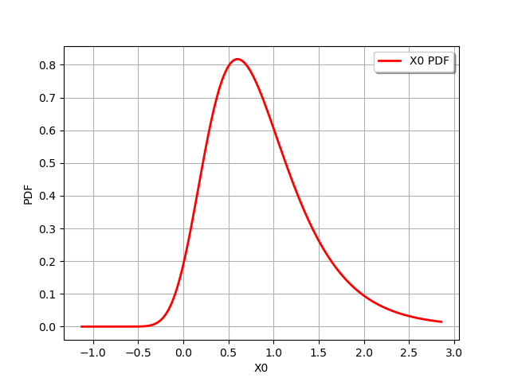
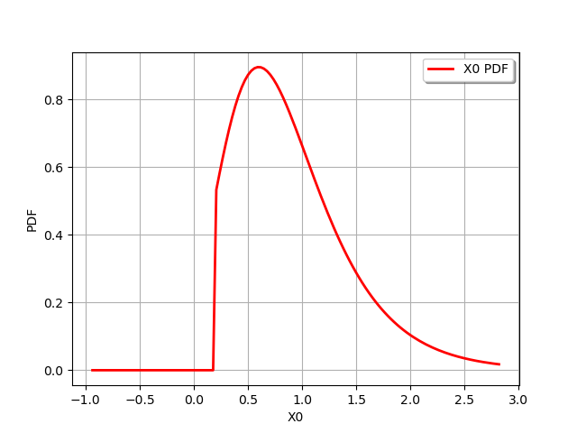
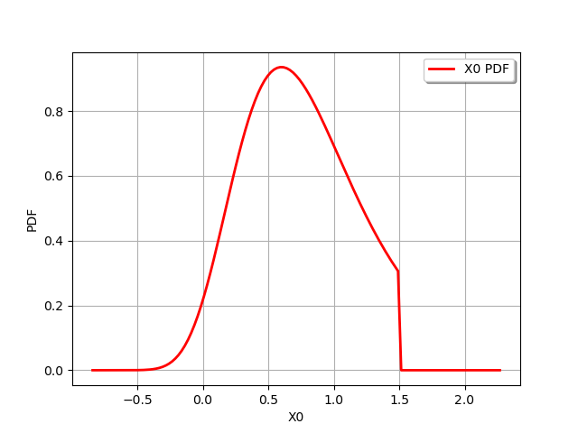
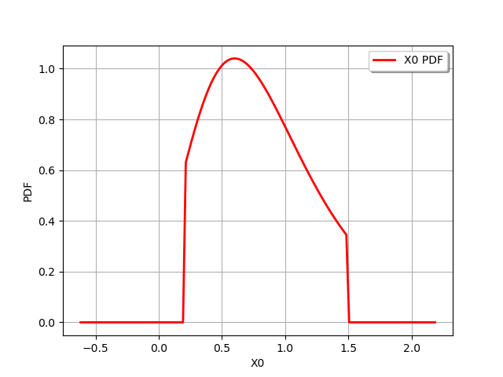
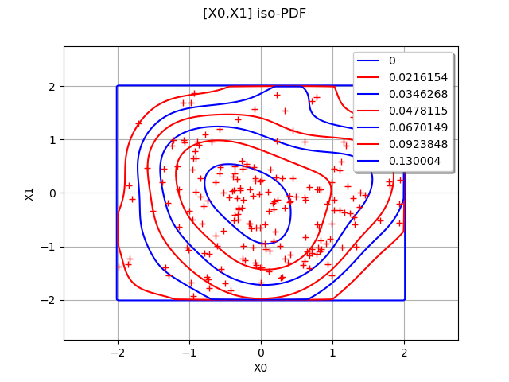

Note
Go to the end to download the full example code
Truncate a distribution¶
In this example we are going to define truncated distributions.
It is possible to truncate a distribution in its lower area, or its upper area or in both lower and upper areas.
In 1-d, assuming a and b bounds, its probability density function is defined as:
![\forall y \in \mathbb{R}, p_Y(y) =
\begin{array}{|ll}
0 & \mbox{for } y \geq b \mbox{ or } y \leq a\\
\displaystyle \frac{1}{F_X(b) - F_X(a)}\, p_X(y) & \mbox{for } y\in[a,b]
\end{array}]()
Is is also possible to truncate a multivariate distribution.
import openturns as ot
import openturns.viewer as viewer
from matplotlib import pylab as plt
ot.Log.Show(ot.Log.NONE)
# the original distribution
distribution = ot.Gumbel(0.45, 0.6)
graph = distribution.drawPDF()
view = viewer.View(graph)

truncate on the left
truncated = ot.TruncatedDistribution(distribution, 0.2, ot.TruncatedDistribution.LOWER)
graph = truncated.drawPDF()
view = viewer.View(graph)

truncate on the right
truncated = ot.TruncatedDistribution(distribution, 1.5, ot.TruncatedDistribution.UPPER)
graph = truncated.drawPDF()
view = viewer.View(graph)

truncated on both bounds
truncated = ot.TruncatedDistribution(distribution, 0.2, 1.5)
graph = truncated.drawPDF()
view = viewer.View(graph)

Define a multivariate distribution
dimension = 2
size = 70
sample = ot.Normal(dimension).getSample(size)
ks = ot.KernelSmoothing().build(sample)
Truncate it between (-2;2)^n
bounds = ot.Interval([-2.0] * dimension, [2.0] * dimension)
truncatedKS = ot.Distribution(ot.TruncatedDistribution(ks, bounds))
Draw its PDF
graph = truncatedKS.drawPDF([-2.5] * dimension, [2.5] * dimension, [256] * dimension)
graph.add(ot.Cloud(truncatedKS.getSample(200)))
graph.setColors(["blue", "red"])
view = viewer.View(graph)
plt.show()
